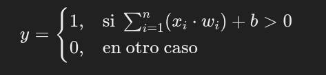
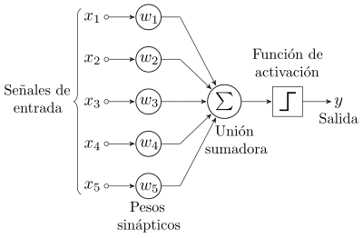
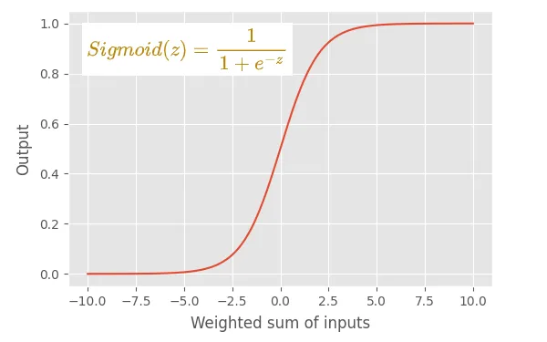
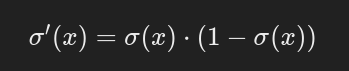
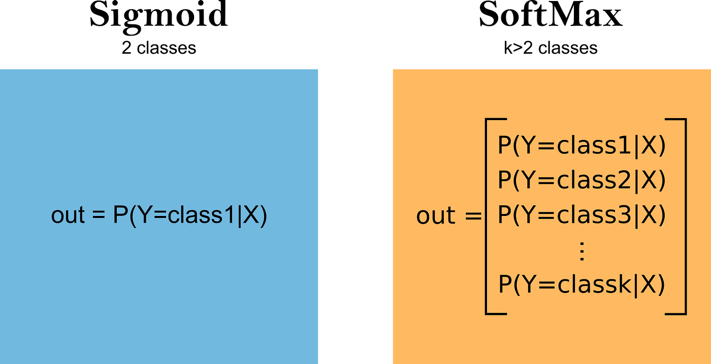
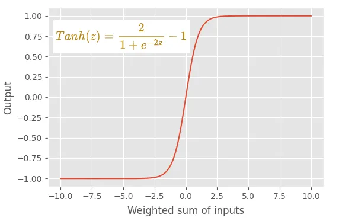
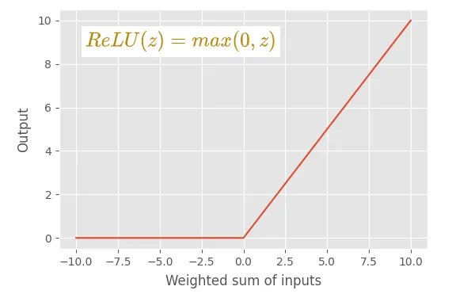
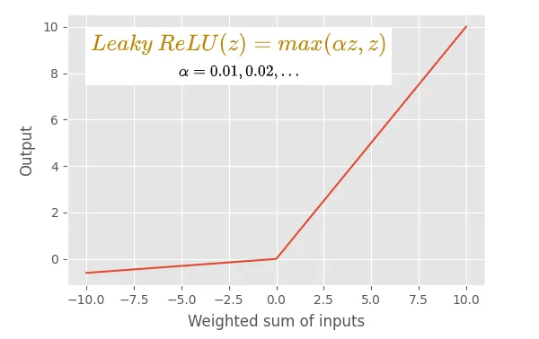
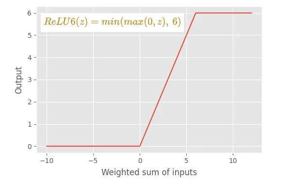
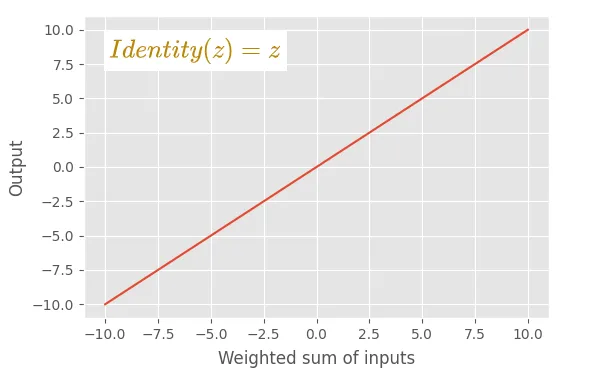

Perceptron y función de activación
Por Victor Padron Garcia y Iván López González
¿Qué es un perceptrón?
Un perceptrón es un concepto fundamental en el campo de la inteligencia artificial y el aprendizaje automático. Es un tipo de modelo de red neuronal artificial, específicamente una red neuronal de una sola capa. Fue propuesto por Frank Rosenblatt en 1957.
En términos simples, un perceptrón toma varias entradas, cada una multiplicada por un peso correspondiente, suma estos productos ponderados y luego aplica una función de activación para producir una salida.
Matemáticamente, la salida (y) de un perceptrón con entradas x1,x2,...,xn y pesos w1,w2,...,wn con un umbral de activación b se calcula de la siguiente manera:

Aunque los perceptrones son simples y lineales, se pueden combinar en capas para formar redes neuronales más complejas. Sin embargo, los perceptrones por sí solos tienen limitaciones para aprender patrones más complicados. En la década de 1980, se desarrollaron conceptos como la retropropagación (backpropagation) y las redes neuronales multicapa para abordar estas limitaciones y permitir el entrenamiento de modelos más poderosos
Ejemplo de perceptrón:

Código python de un perceptrón (se puede ejecutar en collab):
umbral = 0.5
tasa_de_aprendizaje = 0.1
pesos = [0, 0, 0]
conjunto_de_formación = [((1, 0, 0), 1), ((1, 0, 1), 1), ((1, 1, 0), 1), ((1, 1, 1), 0)]
def producto_punto(valores, pesos):
return sum(valor * peso for valor, peso in zip(valores, pesos))
while True:
print('-' * 60)
contador_de_errores = 0
for vector_de_entrada, salida_deseada in conjunto_de_formación:
print(pesos)
resultado = producto_punto(vector_de_entrada, pesos) > umbral
error = salida_deseada - resultado
if error != 0:
contador_de_errores += 1
for indice, valor in enumerate(vector_de_entrada):
pesos[indice] += tasa_de_aprendizaje * error * valor
if contador_de_errores == 0:
break
Soluciones a problemas de los perceptrones
La retropropagación (backpropagation) y las redes neuronales multicapa son conceptos fundamentales en el campo del aprendizaje automático y las redes neuronales.
-
Retropropagación (Backpropagation):
- Definición: La retropropagación es un algoritmo de optimización utilizado para entrenar redes neuronales mediante la actualización iterativa de los pesos de la red en función del error de la salida en comparación con los resultados deseados.
- Proceso: Durante el entrenamiento, la red neuronal realiza una predicción, y luego se calcula el error comparando la predicción con la verdad conocida. La retropropagación ajusta los pesos de la red en función de este error para minimizarlo.
- Paso clave: La información del error se propaga hacia atrás a través de la red, desde la capa de salida hasta las capas ocultas. Los gradientes de los pesos se calculan utilizando la derivada parcial del error con respecto a cada peso, y luego se utilizan para actualizar los pesos mediante técnicas de optimización, como el descenso de gradiente.
-
Redes Neuronales Multicapa (MLP - Multilayer Perceptron):
- Definición: Una red neuronal multicapa es un tipo de red neuronal artificial organizada en capas, que consta de al menos tres capas: una capa de entrada, una o más capas ocultas y una capa de salida.
- Arquitectura: Cada capa está formada por nodos (neuronas) interconectados, y cada conexión entre nodos tiene un peso asociado. La información fluye desde la capa de entrada, a través de las capas ocultas, hasta la capa de salida.
- Función de activación: Cada nodo en las capas ocultas y de salida aplica una función de activación no lineal a la suma ponderada de sus entradas. Esto introduce no linealidades en la red, permitiéndole aprender patrones más complejos.
- Entrenamiento: La retropropagación se utiliza comúnmente para entrenar redes neuronales multicapa. Durante el entrenamiento, los pesos de la red se ajustan para minimizar el error entre las predicciones y los valores deseados en el conjunto de entrenamiento.
En resumen, las redes neuronales multicapa son arquitecturas de red que consisten en capas de nodos interconectados, y la retropropagación es un algoritmo utilizado para entrenar eficientemente estas redes, ajustando los pesos para minimizar el error en las predicciones. La combinación de ambas ha demostrado ser efectiva en una amplia variedad de tareas de aprendizaje automático y reconocimiento de patrones.
Funciones de activación
Como se introdujo anteriormente, una función de activación es una función que calcula la salida de una neurona a partir de los pesos de las entradas. Usualmente se emplean funciones no lineales ya que permiten aprender patrones más complejos y por tanto dar mejores resultados en problemas complejos.
A continuación explicamos algunas funciones de activación comunes y sus aplicaciones:
Función Sigmoide

El gráfico de la función sigmoide tiene forma de "S" y se caracteriza por producir salidas cercanas a 0 o 1 cuando la entrada está muy lejos de cero, lo que es útil para representar probabilidades en el contexto del aprendizaje automático.
En el contexto de las redes neuronales, la función sigmoide se ha utilizado tradicionalmente como función de activación en las capas ocultas, ya que tiene la característica de que su derivada se puede expresar en términos de la propia función sigmoide la cual es útil en el proceso de retropropagación (backpropagation) durante el entrenamiento de redes neuronales, ya que facilita el cálculo de gradientes y ajustes de pesos.

En la actualidad se ha sustituido por la función ReLU excepto en redes neuronales recurrentes. La razón por la que se ha sustituido es porque sufre el problema de desvanecimiento de gradiente, que provoca problemas de convergencia pudiendo detener el proceso de entrenamiento.
Cuando se aplica a la salida de una neurona, la función sigmoide se evalúa en 0 como 0,5 por lo que puede interpretarse como la probabilidad de que la neurona esté activada o no pudiendo resolver problemas de clasificación binaria o clasificación multilabel. Si quisiéramos hacer una clasificación de k clases utilizaremos una función softmax.

Función Tangente Hiperbólica (tanh)

Está función se ha utilizado en capas ocultas como alternativa a la función sigmoide ya que al estar centrada en 0 y estar la salida entre -1 y 1 hace el proceso de optimización más sencillo y rápido. Al igual que la sigmoide sigue en uso en redes neuronales recurrentes y ha sido sustituida en el resto de casos por la función ReLU y sus variantes.
Función de Rectificación Lineal (ReLU)

La función ReLU es la más utilizada en la actualidad ya que es fácil de computar, permite entrenar más rápido los modelos y no sufre tanto por el problema de desvanecimiento de gradiente.
En su lugar sufre del dying ReLU problem que se produce cuando las neuronas son empujadas a estados en los que se vuelven inactivas para la mayoría de las entradas, haciendo que sus gradientes no se ajusten lo suficiente entre iteraciones. Para solucionar este problema aparecen otras funciones de activación como Leaky ReLU.

Otro problema es que los pesos se pueden descontrolar ya que la función no tiene máximo en la parte positiva. Para controlar esto se usa ReLU6 que limita la parte positiva a 6.

Por otro lado, en la capa de salida de la red la función ReLU no puede ser utilizada ya que no proporciona valores adecuados.
Identidad

De todas las funciones explicadas es la única que es lineal y se usa en la capa de salida para problemas de regresión.